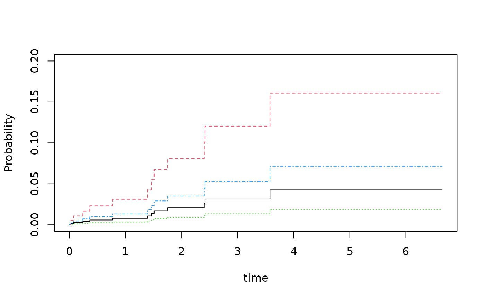
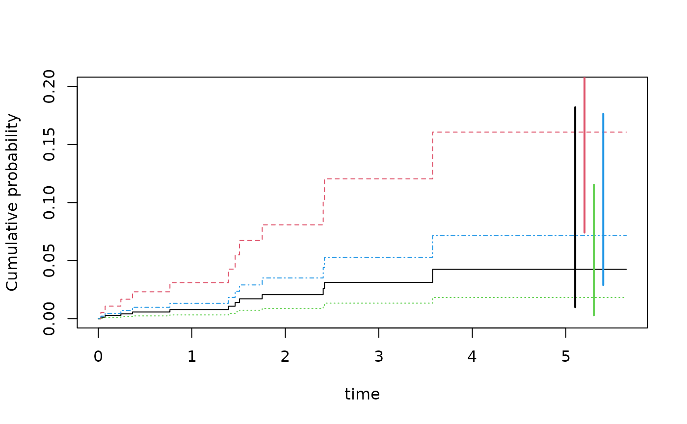

Cumulative Incidence Regression
Klaus Holst & Thomas Scheike
2022-09-03
Source:vignettes/cifreg.Rmd
cifreg.RmdFine-Gray model
considered \[\begin{align*} U^{FG}_{n}(\beta) = \sum_{i=0}^{n} \int_0^{+\infty} \left( X_i- E_n(t,\beta) \right) w_i(t,X_i) dN_{1,i}(t) \text{ where } E_n(t,\beta)=\frac{\tilde S_1(t,\beta) }{\tilde S_0(t,\beta)}, \end{align*}\] with \(w_i(t,X_i) = \frac{G_c(t,X_i)}{G_c(T_i \wedge t,X_i)} I( C_i > T_i \wedge t )\) ,\(\tilde S_k(t,\beta) = \sum_{j=1}^n X_j^k \exp(X_j^T\beta) Y_{1,j}(t)\) for \(k=0,1\), and with with \(\tilde Y_{1,i}(t) = Y_{1,i}(t) w_i(t,X_i)\) for \(i=1,...,n\). \(w_i(t)\) needs to be replaced by an estimator of the censoring distribution, and since it does not depend on \(X\) the \(\hat w_i(t) = \frac{\hat G_c(t,X_i)}{\hat G_c(T_i \wedge t,X_i)} I(C_i > T_i \wedge t)\) where \(\hat G_c\) is the Kaplan-Meier estimator of the censoring distribution.
In this article we briefly introduce some functions for doing cumulative incidence regression, and how to augment the Fine-Gray estimator.
First we simulate some competing risks data using some utility functions.
We simulate data with two causes based on the Fine-Gray model: \[\begin{align} F_1(t,X) & = P(T\leq t, \epsilon=1|X)=( 1 - exp(-\Lambda_1(t) \exp(X^T \beta_1))) \\ F_2(t,X) & = P(T\leq t, \epsilon=2|X)= ( 1 - exp(-\Lambda_2(t) \exp(X^T \beta_2))) \cdot (1 - F_1(\infty,X)) \end{align}\] where the baselines are given as \(\Lambda_j(t) = \rho_j (1- exp(-t/\nu_j))\) for \(j=1,2\), and the \(X\) being two independent binomials. Alternatively, one can also replace the FG-model with a logistic link \(\mbox{expit}( \Lambda_j(t) + \exp(X^T \beta_j))\).
The advantage of the model is that it is easy to fit and to get standard errors, and that it is quite flexible essentially being a Cox-model. On the downside is that the coefficients are quite hard to interpret since they are the \(cloglog\) coefficients of \(1-F_1(t,X)\). Specifically, \[\begin{align} \log(-\log( 1-F_1(t,X_1+1,X_2))) - \log(-\log( 1-F_1(t,X_1,X_2))) & = \beta_1, \end{align}\] so the effect is \(\beta_1\) of \(X_1\) is on \(1-F_1(t,X)\) on the \(cloglog\) scale.
library(mets)
options(warn=-1)
set.seed(1000) # to control output in simulatins for p-values below.
rho1 <- 0.2; rho2 <- 10
n <- 400
beta=c(0.0,-0.1,-0.5,0.3)
## beta1=c(0.0,-0.1); beta2=c(-0.5,0.3)
dats <- simul.cifs(n,rho1,rho2,beta,rc=0.5,rate=7)
dtable(dats,~status)
#>
#> status
#> 0 1 2
#> 127 12 261
dsort(dats) <- ~timeWe have a look at the non-parametric cumulative incidence curves
par(mfrow=c(1,2))
cifs1 <- cif(Event(time,status)~strata(Z1,Z2),dats,cause=1)
plot(cifs1)
cifs2 <- cif(Event(time,status)~strata(Z1,Z2),dats,cause=2)
plot(cifs2)
Now fitting the Fine-Gray model
fg <- cifreg(Event(time,status)~Z1+Z2,data=dats,cause=1,propodds=NULL)
summary(fg)
#>
#> n events
#> 400 12
#>
#> 400 clusters
#> coeffients:
#> Estimate S.E. dU^-1/2 P-value
#> Z1 0.69686 0.38760 0.38882 0.0722
#> Z2 -0.85929 0.62453 0.61478 0.1689
#>
#> exp(coeffients):
#> Estimate 2.5% 97.5%
#> Z1 2.00744 0.93911 4.2911
#> Z2 0.42346 0.12451 1.4402
dd <- expand.grid(Z1=c(-1,1),Z2=0:1)
pfg <- predict(fg,dd)
plot(pfg,ylim=c(0,0.2))
SE’s for the baseline and predictions of FG
The standard errors reported for the FG-estimator are based on the i.i.d decompostion (influence functions) of the estimator that we give later. A similar decompostion exist for the baseline and is needed when standard errors of predictions are computed. These are a bit harder to compute for all time-points simultaneously, but they can be obtained for specific timepoints jointly with the iid decomposition of the regression coefficients and then used to get standard errors for predictions.
We here plot the predictions with jittered confidence intervals for the predictions at time point 5
### predictions with CI based on iid decomposition of baseline and beta
fg <- cifreg(Event(time,status)~Z1+Z2,data=dats,cause=1,propodds=NULL,cox.prep=TRUE)
Biid <- mets:::iid.baseline.cifreg(fg,time=5)
pfgse <- FGprediid(Biid,dd)
pfgse
#> pred se-log lower upper
#> [1,] 0.04253879 0.7418354 0.009938793 0.1820692
#> [2,] 0.16069100 0.3946377 0.074143886 0.3482633
#> [3,] 0.01823957 0.9410399 0.002884032 0.1153531
#> [4,] 0.07149610 0.4611261 0.028958169 0.1765199
plot(pfg,ylim=c(0,0.2))
for (i in 1:4) lines(c(5,5)+i/10,pfgse[i,3:4],col=i,lwd=2)
The iid decompostions are stored inside Biid, in addition we note that the iid decompostions for \(\hat \beta - \beta_0\) are obtained by the command iid()
Comparison
We compare with the cmprsk function but without running it to avoid dependencies:
run <- 0
if (run==1) {
library(cmprsk)
mm <- model.matrix(~Z1+Z2,dats)[,-1]
cr <- with(dats,crr(time,status,mm))
cbind(cr$coef,diag(cr$var)^.5,fg$coef,fg$se.coef,cr$coef-fg$coef,diag(cr$var)^.5-fg$se.coef)
# [,1] [,2] [,3] [,4] [,5] [,6]
# Z1 0.6968603 0.3876029 0.6968603 0.3876029 -1.534155e-09 -7.811395e-10
# Z2 -0.8592892 0.6245258 -0.8592892 0.6245258 8.537615e-14 4.430734e-11
}
if (run==1) {
fg0 <- cifreg(Event(time,status)~Z1+Z2,data=dats,cause=1,propodds=NULL,beta=cr$coef,no.opt=TRUE)
cbind(diag(cr$var)^.5,fg0$se.coef,diag(cr$var)^.5-fg0$se.coef)
# [,1] [,2] [,3]
# [1,] 0.3876029 0.3876029 -8.881784e-16
# [2,] 0.6245258 0.6245258 3.330669e-16
}When comparing with the results from the coxph based on setting up the data using the finegray function, we get the same estimates but note that the standard errors of the coxph is missing a term and therefore slightly different. When comparing to the estimates from coxph missing the additional censoring term we see that we get also the same standard errors
if (run==1) {
dats$id <- 1:nrow(dats)
dats$event <- factor(dats$status,0:2, labels=c("censor", "death", "other"))
fgdats <- finegray(Surv(time,event)~.,data=dats)
coxfg <- coxph(Surv(fgstart, fgstop, fgstatus) ~ Z1+Z2 + cluster(id), weight=fgwt, data=fgdats)
fg0 <- cifreg(Event(time,status)~Z1+Z2,data=dats,cause=1,propodds=NULL)
cbind( coxfg$coef,fg0$coef, coxfg$coef-fg0$coef)
# [,1] [,2] [,3]
# Z1 0.6968603 0.6968603 -1.534153e-09
# Z2 -0.8592892 -0.8592892 8.726353e-14
cbind(diag(coxfg$var)^.5,fg0$se.coef,diag(coxfg$var)^.5-fg0$se.coef)
# [,1] [,2] [,3]
# [1,] 0.3889129 0.3876029 0.0013099907
# [2,] 0.6241225 0.6245258 -0.0004033148
cbind(diag(coxfg$var)^.5,fg0$se1.coef,diag(coxfg$var)^.5-fg0$se1.coef)
# [,1] [,2] [,3]
# [1,] 0.3889129 0.3889129 -7.839487e-10
# [2,] 0.6241225 0.6241225 4.448153e-11
}We also remove all censorings from the data to compare the estimates with those based on coxph, and observe that the estimates as well as the standard errors agree
datsnc <- dtransform(dats,status=2,status==0)
dtable(datsnc,~status)
#>
#> status
#> 1 2
#> 12 388
datsnc$id <- 1:n
datsnc$entry <- 0
max <- max(dats$time)+1
## for cause 2 add risk interaval
datsnc2 <- subset(datsnc,status==2)
datsnc2 <- transform(datsnc2,entry=time)
datsnc2 <- transform(datsnc2,time=max)
datsncf <- rbind(datsnc,datsnc2)
#
cifnc <- cifreg(Event(time,status)~Z1+Z2,data=datsnc,cause=1,propodds=NULL)
cc <- coxph(Surv(entry,time,status==1)~Z1+Z2+cluster(id),datsncf,robust=TRUE)
cbind(cifnc$coef,cifnc$se.coef, cc$coef, diag(cc$var)^.5)
#> [,1] [,2] [,3] [,4]
#> Z1 0.7376223 0.3962877 0.7376223 0.3962877
#> Z2 -0.8211457 0.6308807 -0.8211457 0.6308807
cbind(cifnc$coef-cc$coef, diag(cc$var)^.5-cifnc$se.coef)
#> [,1] [,2]
#> Z1 2.053291e-09 -1.048035e-09
#> Z2 1.915135e-13 7.571810e-11the cmprsk gives something slightly-slightly different
Strata dependent Censoring weights
We can improve efficiency and avoid bias by allowing the censoring weights to depend on the covariates
fgcm <- cifreg(Event(time,status)~Z1+Z2,data=dats,cause=1,propodds=NULL,
cens.model=~strata(Z1,Z2))
summary(fgcm)
#>
#> n events
#> 400 12
#>
#> 400 clusters
#> coeffients:
#> Estimate S.E. dU^-1/2 P-value
#> Z1 0.54277 0.37188 0.39352 0.1444
#> Z2 -0.91846 0.61886 0.61447 0.1378
#>
#> exp(coeffients):
#> Estimate 2.5% 97.5%
#> Z1 1.72077 0.83019 3.5667
#> Z2 0.39913 0.11867 1.3424
summary(fg)
#>
#> n events
#> 400 12
#>
#> 400 clusters
#> coeffients:
#> Estimate S.E. dU^-1/2 P-value
#> Z1 0.69686 0.38760 0.38882 0.0722
#> Z2 -0.85929 0.62453 0.61478 0.1689
#>
#> exp(coeffients):
#> Estimate 2.5% 97.5%
#> Z1 2.00744 0.93911 4.2911
#> Z2 0.42346 0.12451 1.4402We note that the standard errors are slightly smaller for the more efficient estimator.
The influence functions of the FG-estimator is given by ,
\[\begin{align*}
\phi_i^{FG} & = \int (X_i- e(t)) \tilde w_i(t) dM_{i1}(t,X_i) + \int \frac{q(t)}{\pi(t)} dM_{ic}(t), \\
& = \phi_i^{FG,1} + \phi_i^{FG,2},
\end{align*}\] where the first term is what would be achieved for a known censoring distribution, and the second term is due to the variability from the Kaplan-Meier estimator. Where \(M_{ic}(t) = N_{ic}(t) - \int_0^t Y_i(s) d\Lambda_c (s)\) with \(M_{ic}\) the standard censoring martingale.
The function \(q(t)\) that reflects that the censoring only affects the terms related to cause “2” jumps, can be written as (see Appendix B2) \[\begin{align*} q(t) & = E( H(t,X) I(T \leq t, \epsilon=2) I(C > T)/G_c(T)) = E( H(t,X) F_2(t,X) ), \end{align*}\] with \(H(t,X) = \int_t^{\infty} (X- e(s)) G(s) d \Lambda_1(s,X)\) and since \(\pi(t)=E(Y(t))=S(t) G_c(t)\).
In the case where the censoring weights are stratified (based on \(X\)) we get the influence functions related to the censoring term with \[\begin{align*} q(t,X) & = E( H(t,X) I(T \leq t, \epsilon=2) I(T < C)/G_c(T,X) | X) = H(t,X) F_2(t,X), \end{align*}\] so that the influence function becomes \[\begin{align*} \int (X-e(t)) w(t) dM_1(t,X) + \int H(t,X) \frac{F_2(t,X)}{S(t,X)} \frac{1}{G_c(t,X)} dM_c(t,X). \end{align*}\] with \(H(t,X) = \int_t^{\infty} (X- e(s)) G(s,X) d \Lambda_1(s,X)\).
Augmenting the FG-estimator
Rather than using a larger censoring model we can also compute the augmentation term directly and then fit the FG-model based on this augmentation term and do a couple of iterations
fgaugS <- FG_AugmentCifstrata(Event(time,status)~Z1+Z2+strata(Z1,Z2),data=dats,cause=1,E=fg$E)
summary(fgaugS)
#>
#> n events
#> 400 12
#>
#> 400 clusters
#> coeffients:
#> Estimate S.E. dU^-1/2 P-value
#> Z1 0.55614 0.29861 0.35607 0.0625
#> Z2 -0.88438 0.61209 0.62011 0.1485
#>
#> exp(coeffients):
#> Estimate 2.5% 97.5%
#> Z1 1.74392 0.97128 3.1312
#> Z2 0.41297 0.12442 1.3707
fgaugS2 <- FG_AugmentCifstrata(Event(time,status)~Z1+Z2+strata(Z1,Z2),data=dats,cause=1,E=fgaugS$E)
summary(fgaugS2)
#>
#> n events
#> 400 12
#>
#> 400 clusters
#> coeffients:
#> Estimate S.E. dU^-1/2 P-value
#> Z1 0.56000 0.29957 0.35687 0.0616
#> Z2 -0.88347 0.61172 0.61993 0.1487
#>
#> exp(coeffients):
#> Estimate 2.5% 97.5%
#> Z1 1.75068 0.97321 3.1492
#> Z2 0.41335 0.12463 1.3709
fgaugS3 <- FG_AugmentCifstrata(Event(time,status)~Z1+Z2+strata(Z1,Z2),data=dats,cause=1,E=fgaugS2$E)
summary(fgaugS3)
#>
#> n events
#> 400 12
#>
#> 400 clusters
#> coeffients:
#> Estimate S.E. dU^-1/2 P-value
#> Z1 0.55989 0.29954 0.35685 0.0616
#> Z2 -0.88350 0.61173 0.61994 0.1487
#>
#> exp(coeffients):
#> Estimate 2.5% 97.5%
#> Z1 1.75047 0.97317 3.1487
#> Z2 0.41333 0.12462 1.3709Again we note slightly smaller standard errors when augmenting the estimator.
The function compute the augmentation term for fixed \(E(t)\) based on the current \(\hat \beta\) \[\begin{align*} U_n^{A} = \sum_{i=1}^n \int_{0}^{+\infty} \frac{F_2(t,X_i)}{S(t,X_i)G_c(t,X_i)} H(t,X_i,E,G_c,\Lambda_1) dM_{ci}(t) \end{align*}\] using working models based on stratification to get \(F_1^s\) and \(F_2^s\) where the strata are given by \(strata()\) in the call. Then fits the FG model so solve the \[\begin{align*} U_n^{A}(\beta_p) + U^{FG}_{n}(\beta) = 0. \end{align*}\]
Then we may iterate to get a solution to the augmented score equation \[\begin{align*} U_n^{A}(\beta_\infty) + U^{FG}_{n}(\beta_\infty) = 0. \end{align*}\]
The censoring model here is one overall Kaplan-Meier.
The influence funtion for the augmented estimator is \[\begin{align*} \int (X-e(t)) w(t) dM_1(t,X) + \int H(t,X) \frac{F_2(t,X)}{S(t,X)} \frac{1}{G_c(t)} dM_c. \end{align*}\] and standard errors are based on this formula.
Logistic-link
rho1 <- 0.2; rho2 <- 10
n <- 400
beta=c(0.0,-0.1,-0.5,0.3)
dats <- simul.cifs(n,rho1,rho2,beta,rc=0.5,rate=7,type="logistic")
dtable(dats,~status)
#>
#> status
#> 0 1 2
#> 166 13 221
dsort(dats) <- ~timeThe model where \[\begin{align*} \mbox{logit}(F_1(t,X)) & = \alpha(t) + X^T \beta \end{align*}\] that then leads to OR interpretation of the \(F_1\), can also be fitted easily, however, the standard errors are harder to compute and only approximative (assuming that the censoring weights are known) but this gives typically only a small error. In the \({{\bf timereg}}\)-package the model can be fitted using different estimators that are more efficient using different weights but this is much slower.
Fitting the model and getting OR’s
or <- cifreg(Event(time,status)~Z1+Z2,data=dats,cause=1)
summary(or)
#>
#> n events
#> 400 13
#>
#> 400 clusters
#> coeffients:
#> Estimate S.E. dU^-1/2 P-value
#> Z1 -0.021671 0.280140 0.278754 0.9383
#> Z2 0.459416 0.581451 0.570530 0.4295
#>
#> exp(coeffients):
#> Estimate 2.5% 97.5%
#> Z1 0.97856 0.56511 1.6945
#> Z2 1.58315 0.50651 4.9483SessionInfo
sessionInfo()
#> R version 4.2.1 (2022-06-23)
#> Platform: x86_64-pc-linux-gnu (64-bit)
#> Running under: Ubuntu 20.04.4 LTS
#>
#> Matrix products: default
#> BLAS: /usr/lib/x86_64-linux-gnu/blas/libblas.so.3.9.0
#> LAPACK: /usr/lib/x86_64-linux-gnu/lapack/liblapack.so.3.9.0
#>
#> locale:
#> [1] LC_CTYPE=C.UTF-8 LC_NUMERIC=C LC_TIME=C.UTF-8
#> [4] LC_COLLATE=C.UTF-8 LC_MONETARY=C.UTF-8 LC_MESSAGES=C.UTF-8
#> [7] LC_PAPER=C.UTF-8 LC_NAME=C LC_ADDRESS=C
#> [10] LC_TELEPHONE=C LC_MEASUREMENT=C.UTF-8 LC_IDENTIFICATION=C
#>
#> attached base packages:
#> [1] stats graphics grDevices utils datasets methods base
#>
#> other attached packages:
#> [1] mets_1.3.0 lava_1.6.10 timereg_2.0.2 survival_3.3-1
#>
#> loaded via a namespace (and not attached):
#> [1] Rcpp_1.0.9 highr_0.9 bslib_0.4.0
#> [4] compiler_4.2.1 jquerylib_0.1.4 tools_4.2.1
#> [7] digest_0.6.29 jsonlite_1.8.0 evaluate_0.16
#> [10] memoise_2.0.1 lattice_0.20-45 rlang_1.0.5
#> [13] Matrix_1.4-1 cli_3.3.0 parallel_4.2.1
#> [16] yaml_2.3.5 mvtnorm_1.1-3 pkgdown_2.0.6
#> [19] xfun_0.32 fastmap_1.1.0 stringr_1.4.1
#> [22] knitr_1.40 desc_1.4.1 fs_1.5.2
#> [25] sass_0.4.2 systemfonts_1.0.4 globals_0.16.1
#> [28] rprojroot_2.0.3 grid_4.2.1 listenv_0.8.0
#> [31] R6_2.5.1 textshaping_0.3.6 parallelly_1.32.1
#> [34] future.apply_1.9.0 rmarkdown_2.16 purrr_0.3.4
#> [37] magrittr_2.0.3 codetools_0.2-18 htmltools_0.5.3
#> [40] splines_4.2.1 future_1.28.0 numDeriv_2016.8-1.1
#> [43] ragg_1.2.2 stringi_1.7.8 cachem_1.0.6